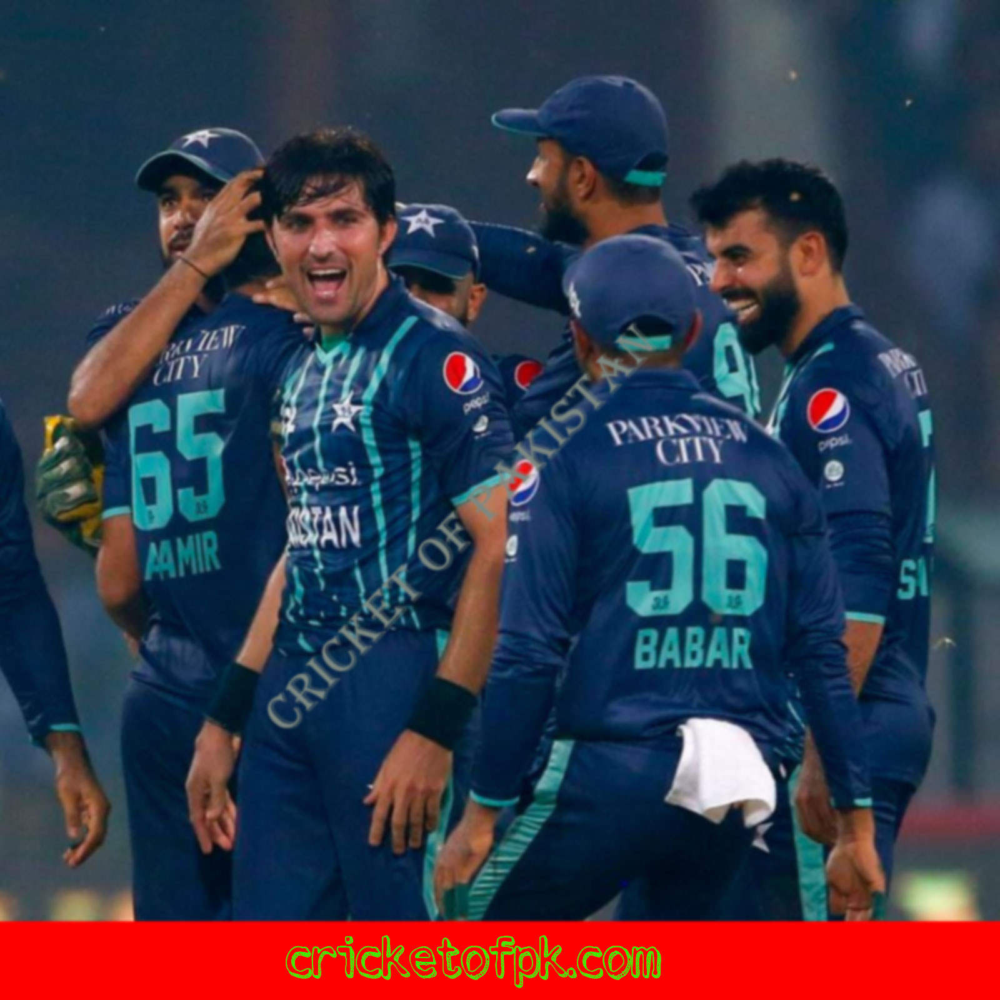

Why Cricket Is The National Game Of Pakistan
Cricket is not just a game in Pakistan; it is a way of life. From the streets to the stadiums,
cricket fever grips the nation every time a match is played. The game has a long and rich
history in Pakistan, dating back to the days of British rule. It was introduced to the country
by British soldiers and quickly became popular among the locals. Cricket remained a popular
sport even after Pakistan gained independence from Britain in 1947. The country’s first cricket
team was formed in 1948 and Pakistan became a member of the International Cricket Council (ICC)
in 1952. The game has since gone on to become the national sport of Pakistan, with millions of
fans across the country. Cricket is more than just a sport in Pakistan; it is a passion that
unites people from all walks of life.
What is cricket?
Cricket is a bat-and-ball game played between two teams of eleven players each on a cricket
field, at the centre of which is a rectangular 22-yard-long pitch. The game is played by 120
million people in many countries, making it the world's second most popular sport after
football.
Each team takes its turn to bat, attempting to score as many runs as possible while the other
team bowls and fields, trying to restrict the scoring and dismiss the batsmen. When each team
has batted an equal number of times, the teams have completed one innings each and the match
enters its second phase: either one team needs to score more runs than their opponents in their
final innings to win, or both teams need to score the same number of runs in their final
innings so that the outcome is decided by a preceding period of play called a Super Over.
The winner of the match is the team that scores more runs in their final innings, or if both
teams have scored exactly the same number of runs over both innings, then whichever team has
scored more boundaries (four or six hits) during the course of the match wins.
What is the history of cricket in Pakistan?
Pakistan is a cricket-loving nation, and the sport has been a part of the country's culture for
many years. The history of cricket in Pakistan can be traced back to the early days of the
sport in the subcontinent.
Cricket was first played in Pakistan in the 19th century, and the game quickly gained
popularity. The first recorded match was played in 1877, between Karachi and Sindh. Karachi
won the match by 22 runs.
The first Pakistani national team was formed in 1952, and the country made its Test debut
against India in 1954. Pakistan rapidly rose through the ranks of international cricket,
winning its first Test series against England in 1971.
The Pakistan cricket team has gone on to enjoy great success at both the Test and One Day
International level. Notable achievements include winning the 1992 World Cup, as well as
taking home top honours at the 1999 Champions Trophy and 2009 ICC World Twenty20.
Why is cricket the national game of Pakistan?
Cricket is the national game of Pakistan for a number of reasons. Firstly, cricket is a very
popular sport in Pakistan and is played by people of all ages. Secondly, cricket is a
relatively inexpensive sport to play, meaning that it is accessible to people from all walks
of life. Thirdly, cricket requires very little equipment, meaning that it can be played almost
anywhere. Finally, cricket has a strong following in Pakistan and is supported by the Pakistani
government.
How do people play cricket in Pakistan?
Cricket is the most popular sport in Pakistan, and it is played throughout the country at all
levels. The Pakistan Cricket Board (PCB) is the governing body for cricket in Pakistan, and
they are responsible for organizing all cricketing activities in the country.
The Pakistani national cricket team has been very successful over the years, winning the ICC
Cricket World Cup in 1992, and reaching the final of the tournament on three other occasions.
They have also won the ICC Champions Trophy twice, and have been ranked as the top Test cricket
team in the world on several occasions.
Pakistanis love to watch cricket, and there are many passionate fans of the game across the
country. When Pakistan is playing a match, it is not uncommon for people to gather around
televisions or radios to listen to commentary of the game.
Cricket is also played at a grassroots level in Pakistan, with many children picking up a bat
and ball and playing on streets or in parks. There are many local clubs and leagues which cater
for all levels of cricketing ability, from those just starting out to experienced players.
If you want to play cricket in Pakistan, there are plenty of opportunities to do so. Whether
you want to watch
What are the benefits of playing cricket?
Cricket is a sport that provides many benefits to those who play it. The following are some of
the benefits of playing cricket:
1. Cricket helps improve hand-eye coordination.
2. Cricket helps improve fitness levels.
3. Cricket can help relieve stress and tension.
4. Cricket helps people bond with others, as it is a team sport.
5. Playing cricket can also be a fun way to socialize and meet new people.
Conclusion
We hope you enjoyed learning about why cricket is the national game of Pakistan. Cricket is a
sport that is deeply ingrained in Pakistani culture, and it is one that unites people from all
walks of life. Whether you are a fan of the sport or not, there is no denying that cricket
plays an important role in Pakistani society.
Cricket of Pakistan

Faraz Ahmed Khan
Cricket of Paksitan
About Us
Cricket of Pakistan is a project of Express Media Group. This website provides its viewers with the latest news in the cricket world. Moreover, Cricket of Pakistan is the first cricket portal where you can read news in this site. The site primarily focuses on providing the latest news and information on Pakistani cricket, both at the international and snational level.


@copyright 2022 Cricket of pakistan